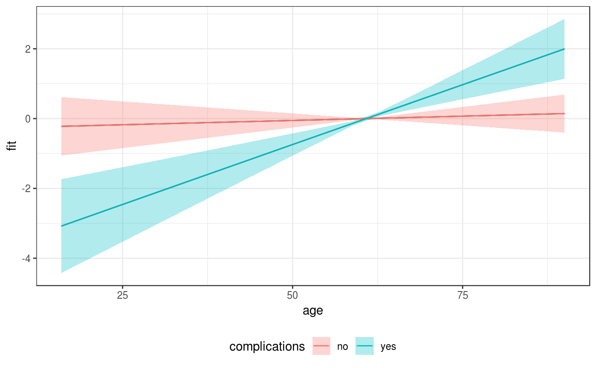
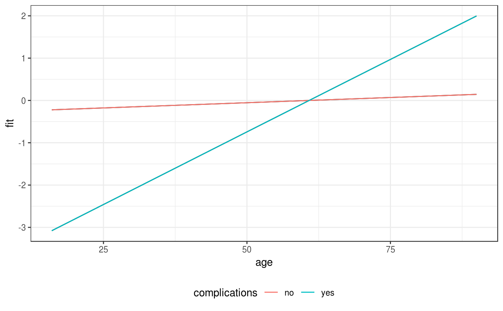
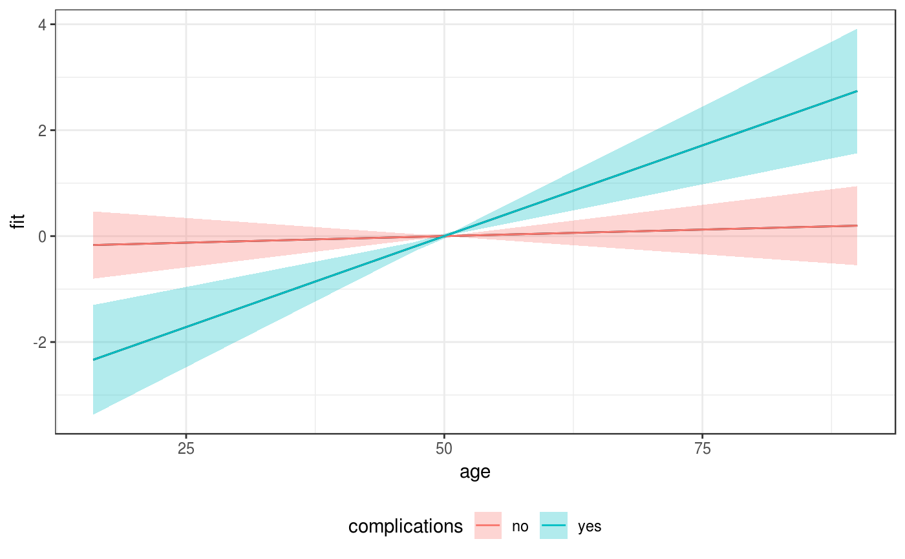

Flexible, high-level plotting function for (non-linear) effects conditional on further covariate specifications and potentially relative to a comparison specification.
gg_slice(data, model, term, ..., reference = NULL, ci = TRUE)
| data | Data used to fit the |
|---|---|
| model | A suitable model object which will be used to estimate the
partial effect of |
| term | A character string indicating the model term for which partial effects should be plotted. |
| ... | Covariate specifications (expressions) that will be evaluated
by looking for variables in |
| reference | If specified, should be a list with covariate value pairs,
e.g. |
| ci | Logical. Indicates if confidence intervals for the |
ped <- tumor[1:200, ] %>% as_ped(Surv(days, status) ~ . ) model <- mgcv::gam(ped_status~s(tend) + s(age, by = complications), data=ped, family = poisson(), offset=offset) make_newdata(ped, age = seq_range(age, 20), complications = levels(complications))#> tstart tend intlen interval id offset ped_status charlson_score #> 1 0 5 5 (0,5] 100.5648 1.609438 0 2.709355 #> 2 0 5 5 (0,5] 100.5648 1.609438 0 2.709355 #> 3 0 5 5 (0,5] 100.5648 1.609438 0 2.709355 #> 4 0 5 5 (0,5] 100.5648 1.609438 0 2.709355 #> 5 0 5 5 (0,5] 100.5648 1.609438 0 2.709355 #> 6 0 5 5 (0,5] 100.5648 1.609438 0 2.709355 #> 7 0 5 5 (0,5] 100.5648 1.609438 0 2.709355 #> 8 0 5 5 (0,5] 100.5648 1.609438 0 2.709355 #> 9 0 5 5 (0,5] 100.5648 1.609438 0 2.709355 #> 10 0 5 5 (0,5] 100.5648 1.609438 0 2.709355 #> 11 0 5 5 (0,5] 100.5648 1.609438 0 2.709355 #> 12 0 5 5 (0,5] 100.5648 1.609438 0 2.709355 #> 13 0 5 5 (0,5] 100.5648 1.609438 0 2.709355 #> 14 0 5 5 (0,5] 100.5648 1.609438 0 2.709355 #> 15 0 5 5 (0,5] 100.5648 1.609438 0 2.709355 #> 16 0 5 5 (0,5] 100.5648 1.609438 0 2.709355 #> 17 0 5 5 (0,5] 100.5648 1.609438 0 2.709355 #> 18 0 5 5 (0,5] 100.5648 1.609438 0 2.709355 #> 19 0 5 5 (0,5] 100.5648 1.609438 0 2.709355 #> 20 0 5 5 (0,5] 100.5648 1.609438 0 2.709355 #> 21 0 5 5 (0,5] 100.5648 1.609438 0 2.709355 #> 22 0 5 5 (0,5] 100.5648 1.609438 0 2.709355 #> 23 0 5 5 (0,5] 100.5648 1.609438 0 2.709355 #> 24 0 5 5 (0,5] 100.5648 1.609438 0 2.709355 #> 25 0 5 5 (0,5] 100.5648 1.609438 0 2.709355 #> 26 0 5 5 (0,5] 100.5648 1.609438 0 2.709355 #> 27 0 5 5 (0,5] 100.5648 1.609438 0 2.709355 #> 28 0 5 5 (0,5] 100.5648 1.609438 0 2.709355 #> 29 0 5 5 (0,5] 100.5648 1.609438 0 2.709355 #> 30 0 5 5 (0,5] 100.5648 1.609438 0 2.709355 #> 31 0 5 5 (0,5] 100.5648 1.609438 0 2.709355 #> 32 0 5 5 (0,5] 100.5648 1.609438 0 2.709355 #> 33 0 5 5 (0,5] 100.5648 1.609438 0 2.709355 #> 34 0 5 5 (0,5] 100.5648 1.609438 0 2.709355 #> 35 0 5 5 (0,5] 100.5648 1.609438 0 2.709355 #> 36 0 5 5 (0,5] 100.5648 1.609438 0 2.709355 #> 37 0 5 5 (0,5] 100.5648 1.609438 0 2.709355 #> 38 0 5 5 (0,5] 100.5648 1.609438 0 2.709355 #> 39 0 5 5 (0,5] 100.5648 1.609438 0 2.709355 #> 40 0 5 5 (0,5] 100.5648 1.609438 0 2.709355 #> age sex transfusion complications metastases resection #> 1 16.00000 male no no yes no #> 2 19.89474 male no no yes no #> 3 23.78947 male no no yes no #> 4 27.68421 male no no yes no #> 5 31.57895 male no no yes no #> 6 35.47368 male no no yes no #> 7 39.36842 male no no yes no #> 8 43.26316 male no no yes no #> 9 47.15789 male no no yes no #> 10 51.05263 male no no yes no #> 11 54.94737 male no no yes no #> 12 58.84211 male no no yes no #> 13 62.73684 male no no yes no #> 14 66.63158 male no no yes no #> 15 70.52632 male no no yes no #> 16 74.42105 male no no yes no #> 17 78.31579 male no no yes no #> 18 82.21053 male no no yes no #> 19 86.10526 male no no yes no #> 20 90.00000 male no no yes no #> 21 16.00000 male no yes yes no #> 22 19.89474 male no yes yes no #> 23 23.78947 male no yes yes no #> 24 27.68421 male no yes yes no #> 25 31.57895 male no yes yes no #> 26 35.47368 male no yes yes no #> 27 39.36842 male no yes yes no #> 28 43.26316 male no yes yes no #> 29 47.15789 male no yes yes no #> 30 51.05263 male no yes yes no #> 31 54.94737 male no yes yes no #> 32 58.84211 male no yes yes no #> 33 62.73684 male no yes yes no #> 34 66.63158 male no yes yes no #> 35 70.52632 male no yes yes no #> 36 74.42105 male no yes yes no #> 37 78.31579 male no yes yes no #> 38 82.21053 male no yes yes no #> 39 86.10526 male no yes yes no #> 40 90.00000 male no yes yes nogg_slice(ped, model, "age", age=seq_range(age, 20), complications=levels(complications), ci = FALSE)gg_slice(ped, model, "age", age=seq_range(age, 20), complications=levels(complications), reference=list(age = 50))